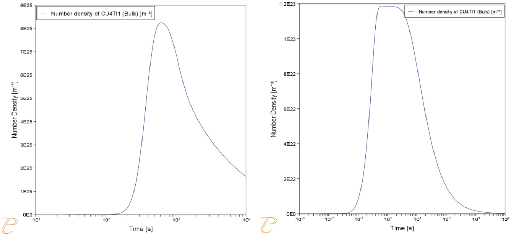
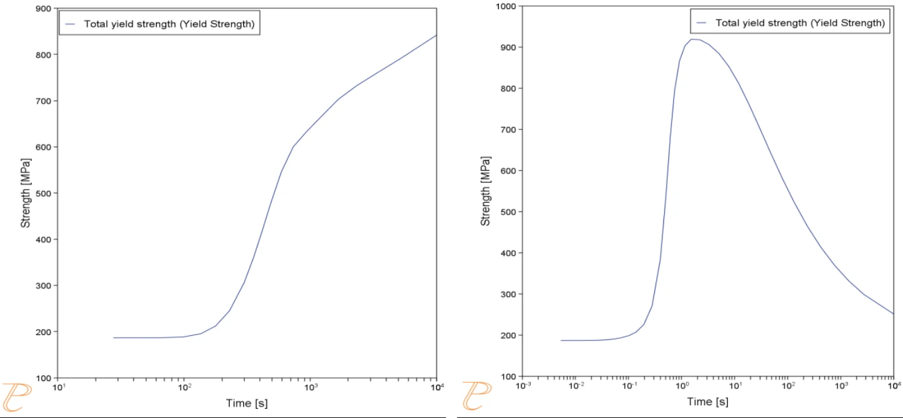

Academic team project
Precipitation Modelling in Copper–Titanium Alloys
Comparing how ageing temperature affects precipitate evolution and the predicted yield strength of a copper–titanium alloy.
- Software
- Thermo-Calc
- Period
- March to July 2025
Introduction
The goal was to understand how the ageing temperature changes the size and number of copper–titanium (Cu₄Ti) precipitates and how those changes affect the alloy’s predicted yield strength.
Method
Alloy and temperatures
The model used a copper alloy containing 1.5% titanium by mass, aged at a constant 300 °C or 500 °C for up to 10,000 seconds.
Simulation outputs
We tracked precipitate size, nucleation rate, number density and the associated yield strength in Thermo-Calc.
My contribution
I worked with my teammates on the software setup, interpretation of the curves and preparation of the report.


Results
At 500 °C the model predicted faster precipitate growth and an earlier peak in number density, followed by a decline. By the end of the simulations, the precipitates were finer and more numerous at 300 °C. The predicted yield strength also kept increasing at 300 °C, while the 500 °C curve had already peaked and declined.
The curves show how the modelled strengthening response changes with ageing temperature. An ageing schedule for production would require experimental validation.

